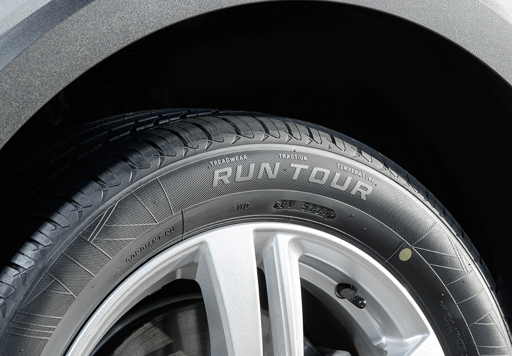
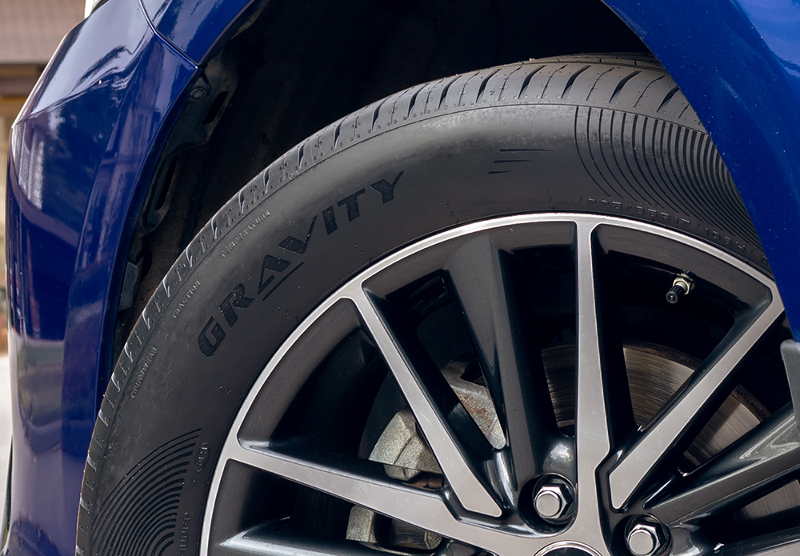
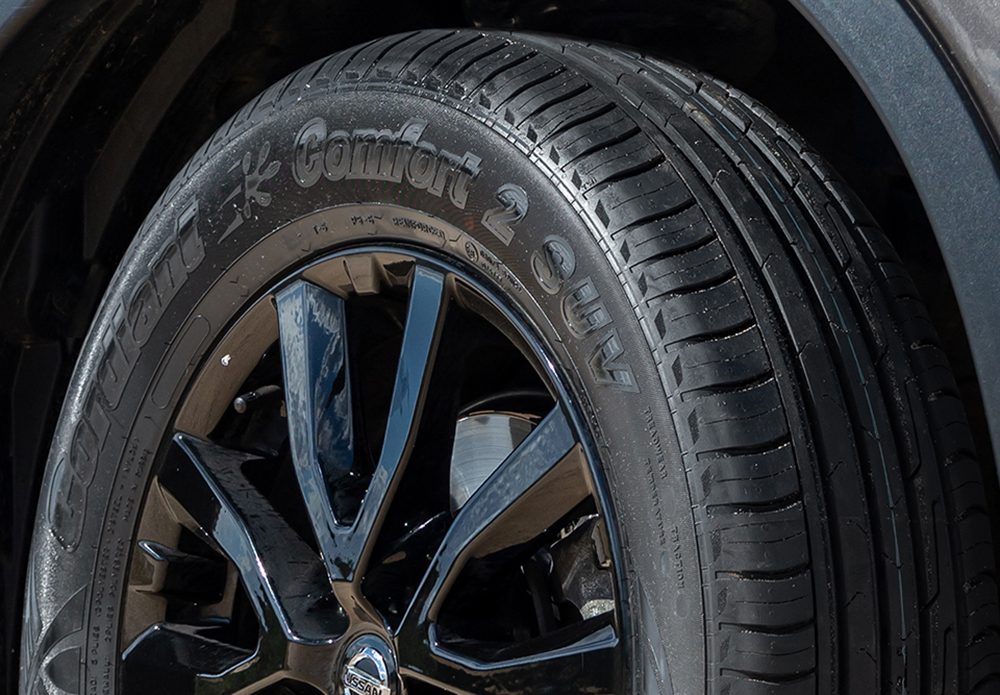

Об истории бренда Cordiant
Прошлое, настоящее и будущее Cordiant
Прошлое, настоящее и будущее Cordiant
Актуальная линейка летних легковых шин Cordiant представлена восьмью моделями, каждая из которых разработана для определенных условий эксплуатации и стиля вождения.
Модели Cordiant Gravity и Gravity SUV, Cordiant Run Tour, Cordiant Comfort 2, Cordiant Sport 3, Cordiant Road Runner предназначены для легковых автомобилей, передвигающихся по городу и трассам, Cordiant Off Road, Cordiant Off Road 2, Cordiant All Terrain – для внедорожников, наибольшую эффективность демонстрируют на неустойчивых и скользких грунтовых поверхностях. Как следствие, в широком модельном ряду шин Cordiant каждый клиент может найти шины, подходящие как для его стиля вождения, так и для различных условий эксплуатации. Повышенным спросом пользуются такие новинки, как Cordiant Run Tour (2025), Cordiant Gravity, Gravity SUV (2023 год), а также хорошо известная всем модель Cordiant Comfort 2.

Комфорт и топливная экономичность
Шины Cordiant Run Tour ориентированы на комфортную езду по шоссе и в городе с акцентом на топливную экономичность и надежность конструкции.
Оптимизированный состав резиновой смеси и ряд технических решений, позволили снизить индекс сопротивления качению и экономить до 30% топлива по сравнению с шиной-предшественником.
Нейлоновый бандаж в конструкции обеспечивает защиту протекторной области от проколов. Корд сверхвысокой прочности, примененный во всей линейке, повышает надежность эксплуатации на дорогах с низким качеством покрытия. Двойной слой каркаса в боковине защищает от порезов и повреждений.
В то же время эта шина отличается хорошей управляемостью. Рисунок протектора с широкими продольными ребрами и массивными плечевыми блоками обеспечивает точное и предсказуемое поведение автомобиля на сухом асфальте. На мокрой же дороге риск аквапланирования снижает эффективная дренажная система.
Модель оценят водители, которые ездят преимущественно по ровным дорогам (город, трасса), ценят комфорт, тишину и топливную экономичность. Шина выпускается в 11 типоразмерах от 13 до 17 дюйма.

Износостойкость и акустический комфорт
Модель Cordiant Gravity предназначена для комфортной и безопасной езды, а SUV-версия этой модели предсказуемо ведет себя как на гравийной дороге, так и на мягких грунтах.
Резиновая смесь с большим содержанием высокоактивного техуглерода, увеличенная глубина протектора на 12% и оптимизированный профиль повышают износостойкость без ущерба для других свойств шины и позволяют проехать больше километров на одном комплекте. В 2024 году эта модель участвовала в проекте «100 000 километров возможностей», цель проекта – установить рекорд по самому длинному неповторяющемуся маршруту по территории России (85 регионов) и прошла более 66 000 километров, что подтверждает практическое воплощение заложенной технологии ходимости.
Сочетание технологий DRY-COR и WET-COR обеспечивает отличную управляемость в поворотах и при перестроении, а также надежное сцепление с мокрой дорогой и эффективную борьбу с аквапланированием даже на высоких скоростях.
Cordiant Gravity обеспечивает акустический комфорт и плавность хода в городе и на скоростной магистрали. Уровень шума составляет около 69 дБ, что сопоставимо с премиальными моделями.
В SUV-версии модели реализована технология STONE-COR: скосы на центральных ребрах повышают количество граней зацепления и увеличивают сцепление с поверхностью, особенно на мягких грунтах, на дне канавок беговой дорожки расположены камневыталкивающие элементы, которые способствуют очищению протектора и защищают его от повреждений.

Идеальная амортизация для разбитых дорог
Модель Cordiant Comfort 2 разрабатывалась с фокусом на комфортную езду. Такие шины хорошо амортизируют на разбитых дорогах, снижают уровень шума в салоне, устойчивы к аквапланированию и уверенно тормозят на сухом и мокром асфальте.
В дождь и слякоть работает фирменная технология WET-COR — эффективная дренажная система, состоящая из продольных ребер и дуговых канавок различной ширины, выдавливает воду из пятна контакта, обеспечивая уверенное поведение на мокром покрытии.
Эластичные боковины и облегченный каркас, усиливают амортизацию и снижают ударную нагрузку на подвеску (технология FLEX-COR).
Курсовую устойчивость при движении по прямой обеспечивают три сплошных ребра, расположенные на беговой дорожке, а внешняя сторона протектора, состоящая из крупных шашек, объединенных общим ребром жесткости гарантирует устойчивость при маневрах и в поворотах (технология DRY-COR).
В свою очередь, асимметричный протектор с 12 неповторяющимися элементами и насечкой «Антишум» повышает акустический комфорт.
Модельный ряд состоит из типоразмеров от 13 до 18 дюйма.
В 2024 году на этих шинах был установлен Рекорд России по самому длительному продолжительному беспрерывному движению на легковом автомобиле.
Шины Cordiant проектируются с учетом российских реалий, которые учитываются при разработке новинок бренда:

Для изготовления шин Cordiant используются самые передовые материалы и компоненты. Резиновая смесь летних шин создается на основе кремний-содержащих полимеров, которые улучшают сцепление с мокрой дорогой.
Ответьте на вопросы и проверьте, насколько хорошо вы знаете ключевые технологии и модели линейки. Среди участников, правильно ответивших на максимальное число вопросов, будут разыграны классные беспроводные наушники
Шины Cordiant — история успеха
Вопрос 1 из 8
Краткая справка по вопросу будет показана здесь.
Результат квиза
Благодарим вас за участие в квизе!
Если вы готовы претендовать на приз, укажите свое ФИО, контактный телефон и электронный адрес.
Перейдите сайт Cordiant - cashback.cordiant.ru. Зарегистрируйтесь, приобретите комплект из 4 шин у официальных партнёров, участвующих в акции, и загрузите чек на сайте cashback.cordiant.ru. Вы не только получите кэшбэк в соответствии с условиями акции, но и автоматически станете участником розыгрыша ценных призов. Увеличьте свою выгоду - покупайте шины и участвуйте в розыгрыше!